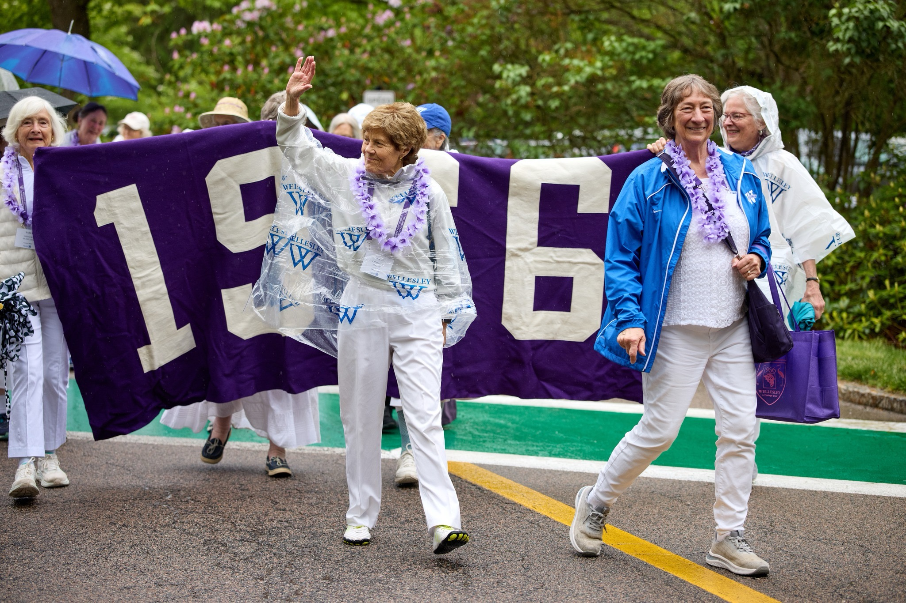
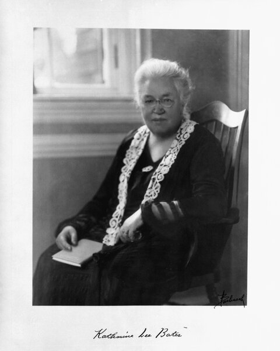
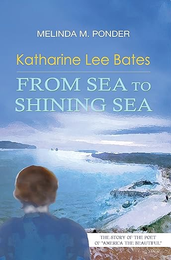
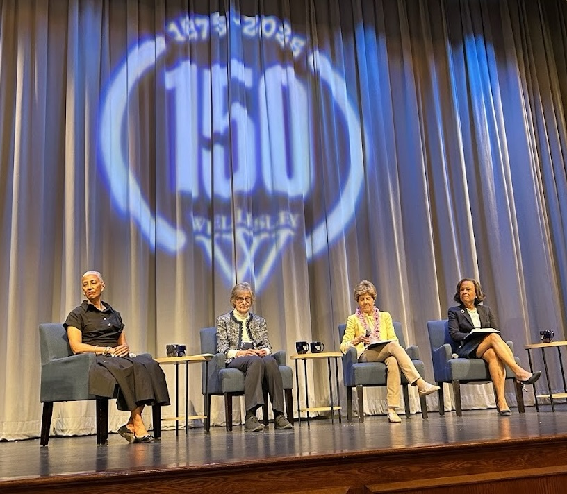
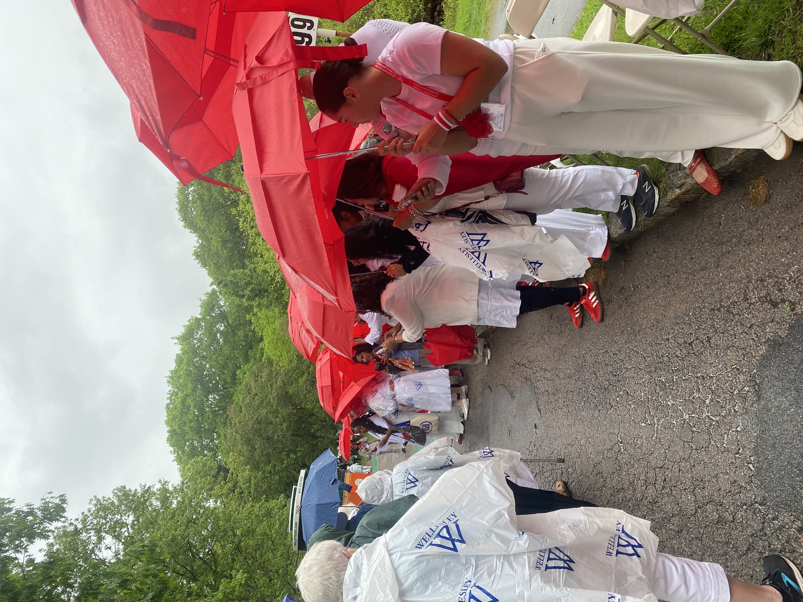
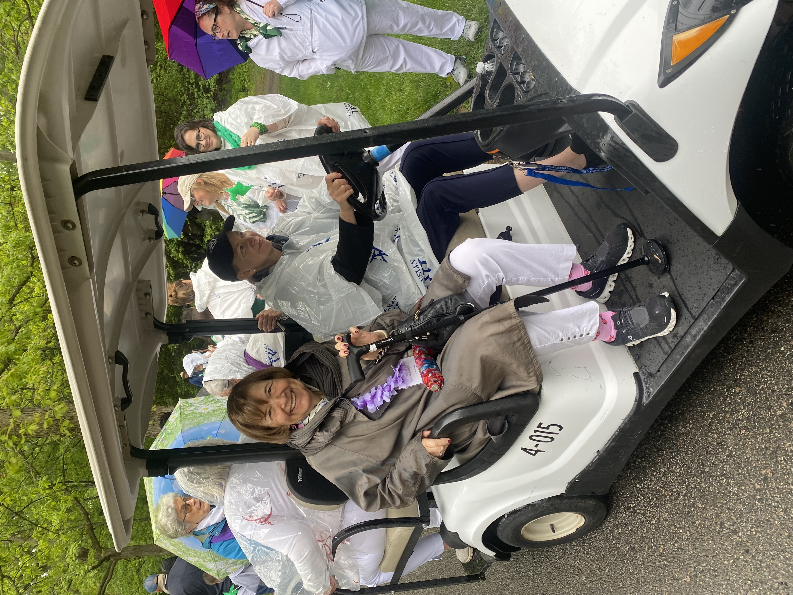
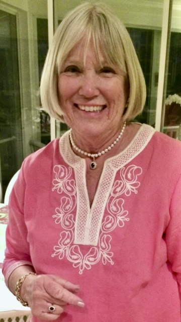
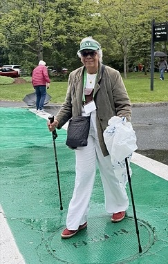

The 60th Reunion Is Worth Celebrating!

One's 50th college reunion is a major milestone. Most of us who can, make it a point to go. But with that one behind us, the 60th is more likely to be skipped. At my alma mater, Wellesley College, the 50th reunion class always wins the attendance award, the 60th never. But for me and many of my classmates, the 60th was nonetheless important. Since our 55th reunion had to be online thanks to Covid, it had been ten years since I had seen most of my class and the campus is always stunning in May when the rhododendrons are in bloom. But a primary reason was two of my closest friends from New York were going, and it was time to get together! Additionally, Wellesley does a fine job of welcoming alumnae.

Founded in 1875 (and celebrating its 150th anniversary year), Wellesley is one of the few remaining women's colleges. With the ongoing debate over single sex education as well as the decline in teaching the liberal arts, as a history major I wanted to endorse both causes.
Despite concerns about male companionship, there was a plethora of men on tap when I was at Wellesley. There were a variety of opportunities to meet them outside of class (the obvious academic benefits of single-sex classes were substantial). The theater group attracted men for thespian opportunities. One could take classes at MIT or spend a semester at Dartmouth. And there of course were mixers at area schools like Harvard (I introduced a classmate to her future husband at such a mixer - but had no luck myself that night!).
Liberal arts courses were and remain many and excellent; STEM offerings were equally available and impressive, from mathematics and statistics to astronomy and physics. Both are critical to a complete education. Meeting classmates at reunion who had been professors at MIT or senior executives in the federal government or financial gurus was part of the fun. Our classmate Diana Chapman Walsh, a former professor at the Harvard School of Public Health, had been President of Wellesley from 1993 to 2007, making our class very special in our minds.

Of particular interest at our 60th was the screening of a new documentary, "From Sea to Shining Sea" about the life of Wellesley graduate and faculty member Katherine Lee Bates, class of 1880, the author of the poem/lyrics to "America the Beautiful." The film was based on Bates' biography written by my classmate Melinda Ponder, about whom I wrote for this publication when she came through Chicago on a book tour. Bates also came through Chicago during the 1893 Columbian World's Exposition, her inspiration for the alabaster cities mentioned in the song. She was enroute to Colorado where a visit to Pike's Peak inspired the line "for purple mountains' majesty," among others. She had dinner in Chicago with social reformer Jane Addams, whose settlement house gave her the idea of starting one in Boston.

The book details the challenges facing a female academic of her era. Even though she was a noted scholar and on the Wellesley faculty, as a woman, she could not enter the Harvard library and had to befriend a male student to borrow books for her research in English literature. And if she married, she would have had to leave the faculty, a nasty choice. She chose to stay.

Colleges and universities stage reunions at their core for one reason: to raise money. By keeping alumnae emotionally engaged with their college and their college memories, higher education encourages donations at all levels. Statistics show that besides religious organizations, the second cause to which people most donate money is education. A college or university has a big job not only to attract alums back for a reunion, but to solidify personal connections by making the reunion memorable and instilling loyalty sufficient to open pocketbooks. Wellesley does an impressive job: scheduling faculty lectures, holding open houses, setting up tours of new campus buildings, and facilitating class dinners. Many members of our class (including me and my friends) even stayed in dormitories, enduring hard mattresses to reinforce old memories. Giving strategies include contact from class fundraising reps, annuity options, and planned giving societies.
A special panel featured four past college presidents discussing the challenges facing higher education.

Admittedly, our 60th reunion involved more looking at photos of grandchildren (some were already Wellesley students!) than discussing donation strategies. The huge benefit of a reunion and a driver for many of us to attend is that everyone is going through roughly the same life stage. It's probably the only gathering where one can assume everyone is within a year of two of being the same age. Most of our class are now retired and having to make various life decisions. I'm not mentioning our age – do the math – but all of us are looking at new challenges for the next ten or twenty (if we're lucky) years and can use all the help we can get. This drew us to the Class Discussion.
The highly anticipated Class Discussion, a regular feature of our reunions, allowed classmates to be open about the challenges and issues they faced. Four of us jump-started the conversation by reporting briefly on our current situations. Many have found new adventures, and many are facing new health challenges. This variety engaged almost everyone in learning about ways to change or enrich their present situations.


About a third of our class has passed away, as have many class spouses. Widowhood was one major topic of discussion. Moving to housing more accommodating to aging hips and knees was another popular topic. We listened to several classmates urge us to move sooner than later to a CCRC (continuing care retirement community) where they had found friends, support, and engaging activities. Health challenges were prominent. When I described recent surgery, a classmate immediately came up to me and said, "Now I know whom I can talk to. I'm having the same thing."
Dodie Williams Headington is clear about why she came. "I wouldn't consider not going. We're all going through the same things…it's an age of transitions for sure." Like my husband and I have done, Headington and her husband moved from a multi-stair situation to a ground level home to ease the stress on creaky joints. They also left the hurricane-devastated island of Boca Grande on Florida's west coast to West Palm Beach on the east coast to be farther inland and near family. Safety is a concern for all of us.

Headington, a former alumnae class president, is active in local Wellesley clubs (encouraged by the college) and has a biweekly Zoom session with a group of dorm mates. Not only did she reconnect with these and other friends, but "I always make new friends at the reunion." She plans to review the class book, comprised of personal updates collected for each reunion, and email women with whom she had newly connected.
Conversations were hardly only about health and housing. I was delighted to hear about new passions, satisfying volunteer work, academic pursuits, favorite books and films. Some had taken professional careers to assisted living opportunities like writing for the group newsletter. Others continued life long avocations like painting or philanthropy. One classmate thoughtfully took each grandchild on a trip to wherever he/she wanted to go. This is what I had come to absorb: experiences that will enhance what my late uncle (he lived to 100!) always called the "4th quarter." Perhaps the most consistent advice so many shared was "just keep moving."
So, what about the 65th reunion? Chicagoan Isabel Stewart, class of 1961 and former executive director of the Chicago Foundation for Women, just attended hers.

"I attended my 65th reunion at Wellesley for old times' sake. I wanted to see that lovely campus again and I wanted to visit with classmates of 60 years ago and compare notes. My dearest Wellesley friend died shortly before reunion. I attended in part in her memory. Additionally, I had made (for me and my circumstances) a major contribution to Wellesley earlier this year after selling an artwork. I wanted to visit campus and affirm my decision to do so!"
So we have many reasons for coming back to our alma mater. The phrase "alma mater" means "nourishing mother" in Latin. For many of us, the love of our alma mater does not end until we can no longer make the journey!